Anova2
Anova2
|
|||||||
| PREV CLASS NEXT CLASS | FRAMES NO FRAMES | ||||||
| SUMMARY: NESTED | FIELD | CONSTR | METHOD | DETAIL: FIELD | CONSTR | METHOD | ||||||
java.lang.Object
public class Anova2
Anova2 - a Java utility to perform an analysis of variance (ANOVA) on a table of data read from a file.
Five experiment designs are supported:
The data must be organized as a p × n matrix. p is the number of participants (one per row) and n is the number of within-subjects test conditions (one per column). Each entry in the matrix contains a measurement on the behaviour of interest (e.g., task completion time or error rate).
For designs with one within-subjects factor, n is the number of levels of the factor. For designs with two within-subjects factors, n is the product of the number of levels of each factor. For example, a two-factor experiment with repeated measures on 15 participants, having 2 levels on the first factor and 3 levels on the second, requires a data file with 15 rows and 2 × 3 = 6 columns. In total, there are 6 test conditions. Such an experiment is called a "2 × 3 within-subjects design".
If two within-subjects factors are used, the nesting of data is important. The columns are ordered with the levels of the second factor nested within the levels of the first factor. As an example, for a 2 × 3 design, the respective order of the data from columns one to six is F1L1-F2L1, F1L1-F2L2, F1L1-F2L3, F1L2-F2L1, F1L2-F2L2, F1L2-F2L3, where F = factor and L = level. The following figure illustrates:
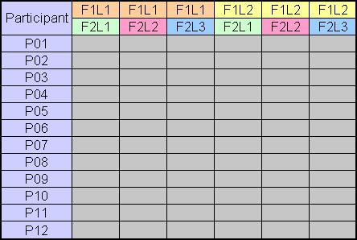
If a between-subjects factor is used, the factor appears as an additional column of nominal data. This is typically a group identifier, and is used, for example, if the participants were divided into groups to counterbalance the order of administering the within-subjects test conditions. A between-subjects factor could also be used for other circumstances (e.g., gender or handedness).
If a between-subjects factor is used, the same number of participants is required in each group.
Invocation (usage message if invoked without arguments):
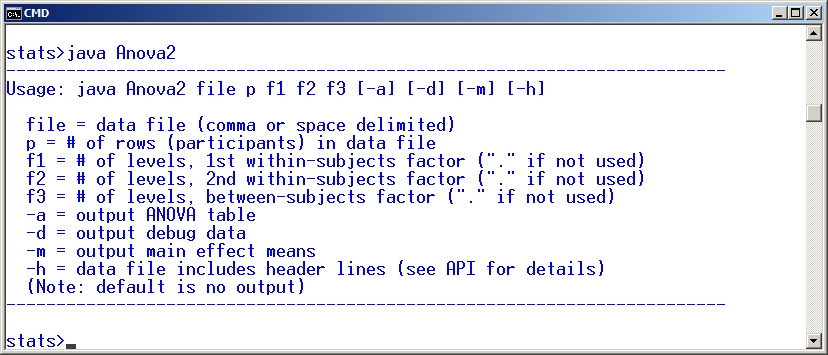
If a between-subjects factor is present, the f3 argument is an integer corresponding
to the number of groups. f3, if present, must divide evenly into p. For
example, p = 15, f1 = 3, and f3 = 3 means the experiment
involved 15 participants and a within-subjects factor with 3 levels. There will be 3 columns of
data for the levels of the f1 factor. Counterbalancing was used with participants
divided into 3 groups with 5 participants/group. (Here, "group" is treated like a
between-subjects factor.) The group identifier (which can be a number or label) is in the 4th
column. The following figure illustrates:
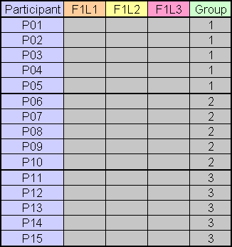
If a between-subjects factor is the only factor (e.g., gender), then the data file contains just two columns, one for the data and one to identify the groups.
If any factor is not present, its command-line argument is replaced with ".".
Four optional arguments are supported:
-a" option produces the ANOVA table. The default
is no output, so make sure either the -a, -d, or -m option
is present.
-d" option produces debug output showing the
original data as well as the means, sums of squares, mean squares, degrees of freedom, F
statistics, and p for the F statistics, for all effects. Output is produced even
for effects that do not exist, so some values may appear as NaN or
Infinity.
-m" option outputs the main effect means. This is
useful to ensure that the data are properly extracted from the data matrix in computing the
F statistics for the various main effects and interaction effects. For example, if the
data are improperly nested for two-factor designs, this error will be apparent by comparing the
output from this option against a manual calculation of the effect means.
-h" option is used if the data file contains
header lines. In this case, the data file must have four header lines preceding the data,
formatted as follows:
DV: <dependent_variable_name>
F1: <f1_name>, <f1_level_1_name>, <f1_level_2_name>, ...
F2: <f2_name>, <f2_level_1_name>, <f2_level_2_name>, ...
F3: <f3_name>
Note: The names for the levels of F3 are obtained from the last column in the raw data file.
The header option is strictly cosmetic. The output ANOVA table (-a option) and main
effect means ( -m option) will identify the dependent variable and the names and
levels of the factors, as given.
Anova2 application and API.
ONE-WAY WITH ONE WITHIN-SUBJECTS FACTOR
The file dix-example-10x2.txt contains
656,702
259,339
612,658
609,645
1049,1129
1135,1179
542,604
495,551
905,893
715,803
The data are hypothetical and appear in an example in Dix et al.'s Human-Computer
Interaction (Prentice Hall, 2004, 3rd ed., p. 337). The single factor (F1) is Icon Design
with two levels: Natural and Abstract. The data entries are the measurements on the dependent
variable Task Completion Time (seconds). The data in the first column are the task completion
time measurements for the Natural icons, while the data in the second column are the measurements
for the Abstract icons. Each row contains the measurements taken on one participant. The
hypothetical experiment used 10 participants.
The mean task completion times (not shown) are 697.7 s for the Natural icons and 750.3 s for the Abstract icons. An analysis of variance determines if there is a statistically significant difference between these means or if the difference is likely due to chance. The analysis is performed as follows:
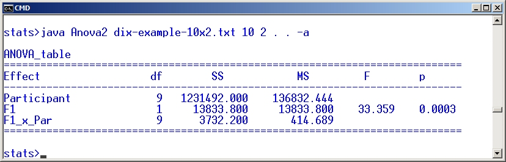
As seen in the table, and as might appear in a research paper, "The experiment revealed a significant effect of Icon Type on Task Completion Time (F1,9 = 33.36, p < .0005)." Even though p = .0003 in the ANOVA table, it is typically reported in research papers as p < n, where n is the closest more conservative value from the set .05, .01, .005, .001, .0005, .0001. Note also that in North American publications, the zero preceding the decimal point is typically omitted (because p is constrained between 0 and 1).
Two other outcomes are worth noting, where the results are non-significant. If p is above .05 and F > 1, p is reported as "p > .05". This means there is a greater than 5% chance that the differences in the means is due to chance. This is sufficient lack of confidence to deem the difference in the means "not significant". If p is above .05 and F ≤ 1, then p is not reported at all, but is replaced with "ns" meaning "not significant". This format is used is because it is impossible for differences in the means to be significant where F ≤ 1.
The results above are shown below in an ANOVA on the same data using StatView.
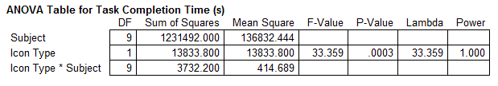
Lambda and Power are not calculated in Anova2. Lambda is a
measure of the noncentrality of the F distribution, calculated as F ×
N, where N is the degrees of freedom of the effect. Power, which ranges from
0 to 1, is the ability to detect an effect, if there is one. The closer to one, the more the
experiment is likely to find an effect, if one exists in the population. Power > .80 is
generally considered acceptable; i.e., if p is significant and Power > .80, then it
is likely that the effect found actually exists.
TWO-WAY WITH ONE WITHIN-SUBJECTS FACTOR AND ONE BETWEEN SUBJECTS FACTOR
The hypothetical experiment described by Dix et al. was a within-subjects design and would likely
use counterbalancing to cancel the learning effects that might occur as participants advanced
from the first test condition to the second. With two conditions, the participants are divided
into two groups of equal size. Half the participants would be tested on the Natural icons first
followed by the Abstract icons, while the other half would be tested in the reverse order. Like
this, "Group" is a between-subjects factor with five participants in each group. To include this
in the analysis, we append a column to the data file, creating a new data file called dix-example-h10x2b.txt. The new column identifies
the groups as either "NA" (Natural first, Abstract second) or "AN" (Abstract first, Natural
second). The file is also modified to include header lines, as per the requirements of the
-h option (see above). Here are the data:
DV: Completion Time (s)
F1: Icon Type, Natural, Abstract
F2: .
F3: Group
656,702,NA
259,339,NA
612,658,NA
609,645,NA
1049,1129,NA
1135,1179,AN
542,604,AN
495,551,AN
905,893,AN
715,803,AN
Note that the data for each group are in consecutive rows. This is not a requirement, however, as
the data are sorted by the last column before performing the ANOVA. (Note: The data for
participant #1 is the data in the first row of sorted data. This point is only relevant with
-m, which outputs the participant means.)
To analyse these data, we replace "." with "2" for f3, indicating the presence of a
between-subjects factor with 2 groups. The -h option is also needed:
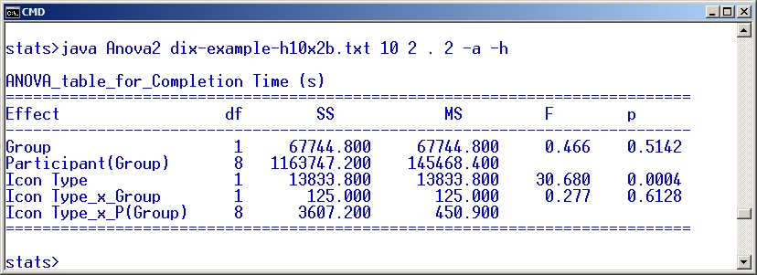
The Group effect was not statistically significant (F1,8 = 0.466, ns). This is good news, since it means counterbalancing worked; i.e., any learning effect that might have occurred for the AN group was effectively offset by a similar and opposing learning effect for the NA group. The Icon Type (F1) × Group interaction effect also failed to achieve statistical significance (F1,8 = 0.277, ns). This means there was no asymmetrical transfer of skill, also good news. Asymmetric transfer of skill means some aspect of one condition helped (or hindered!) the other condition, without a corresponding reverse effect.
The same analysis in StatView appears as
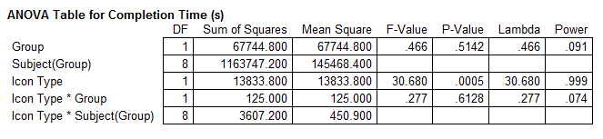
TWO-WAY WITH TWO WITHIN-SUBJECTS FACTORS
For the next example, we use data from an experiment on "eye typing" -- the use of eye tracking technology for text entry using an on-screen soft keyboard. The experimental methodology and data analyses are described in "Audio and visual feedback during eye typing " (Majaranta, MacKenzie, Aula, & Räihä, CHI 2003). The experiment was a 4 × 4 repeated-measures design with 13 participants. The factors and levels were as follows:
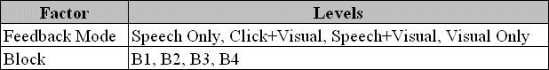
There was no counterbalancing as the order of presenting the feedback modes was randomized.
Although there were several dependent variables, only error rate (%) is presented here. The error
rate ANOVA table is in errorrate-h13x16.txt:
(abbreviated to fit page)
DV: Error Rate (%)
F1: Feedback, Speech Only, Click+Visual, Speech+Visual, Visual Only
F2: Block, B1, B2, B3, B4
F3: .
0.0,0.0,0.0,0.0,0.0,0.7142857142000001,0.0,0.0,0.0,0.0,0.0,0.0, ...
0.0,0.0,0.0,0.0,1.7391304347999998,0.0,0.0,0.0,0.0,0.909090909, ...
0.0,0.0,0.0,0.0,0.0,0.0,0.0,0.0,4.4999282534,3.636363636,0.0,0.0, ...
0.0,0.0,0.0,0.0,1.9047619048000002,0.0,0.0,1.8253968254,0.0, ...
0.0,0.0,0.0,0.0,1.1111111112,1.1111111112,0.0,0.0,0.0,0.0,0.0, ...
0.0,0.0,0.0,0.0,1.052631579,0.0,0.0,2.222222222,0.0,0.0, ...
0.909090909,0.0,0.0,0.0,0.7407407408,1.7391304347999998, ...
0.0,0.0,0.0,0.0,0.909090909,0.0,0.0,0.0,0.0,0.0,0.0, ...
0.0,0.0,0.0,0.8695652173999999,1.4814814814,0.0,0.0,0.0, ...
0.0,0.0,0.0,0.0,0.7407407408,0.0,0.0,1.8461538462,1.052631579, ...
0.0,0.0,0.0,0.0,0.0,0.0,0.0,0.0,0.0,0.7407407408,0.0,0.0, ...
1.6103059582,0.0,0.0,0.0,2.0,0.0,1.052631579,0.7407407408,0.0, ...
4.350649350199999,0.0,1.052631579,0.0,1.3793103448,3.052631579, ...
The data entries are full precision, so the table above is unsightly. The four header lines were
manually inserted to improve the output generated by Anova2.
The -m option may be used prior to the analysis, to view the overall effect means:
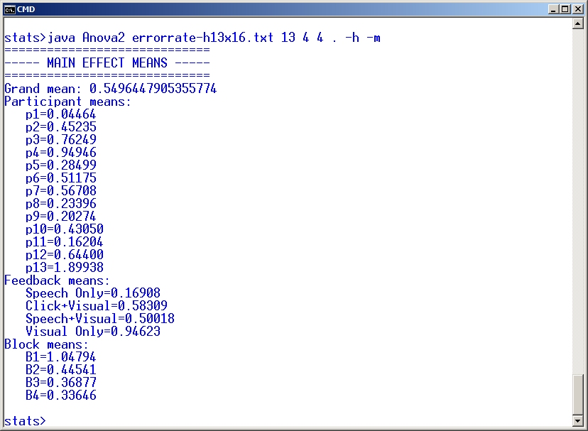
Use of the -m option is highly recommended in situations were more than one factor
is present. The means for the levels of the factors should be compared against the same values
computed manually or in a spreadsheet to ensure the nesting of data is correct.
The analysis of variance is performed as follows:
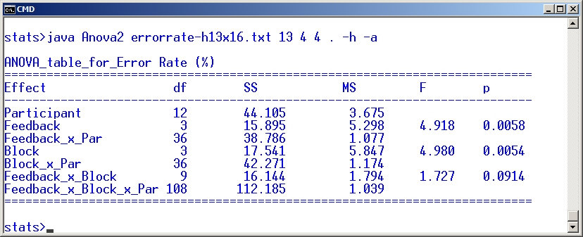
As seen in the table, the main effect of Feedback Mode on Error Rate was significant (F3,36 = 4.92, p < .01). There was also a significant improvement in entry speed with practice as evident by the significant effect of Block (F3,36 = 4.98, p < .001). However, the Feedback Mode × Block interaction effect was not significant (F9,108 = 1.73, p > .05).
The same data similarly analysed in StatView yield the following ANOVA table:
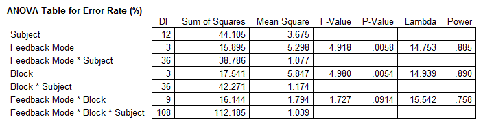
THREE-WAY WITH TWO WITHIN-SUBJECTS FACTORS AND ONE BETWEEN-SUBJECTS FACTOR
The file softkeyboard-h12x10b.txt contains
the data from an experiment comparing two layouts of soft keyboards. The experiment used 12
participants in a 2 × 5 repeated-measures design. The participants tapped the phrase
"the quick brown fox jumps over the lazy dog" five times on each of two soft keyboard layouts.
Each entry of a phrase is called a "trial". The dependent variable was Entry Speed in words per
minute. There were two independent variables, or factors:
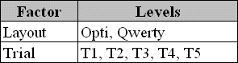
Testing was counterbalanced: Each participant entered the phrase five times with one layout, then five times with the other layout. Half the participants used Opti first, following by Qwerty. The other half used the layouts in the reverse order. Thus, Group was a between-subjects factor with two levels, Group A and Group B.
The data file was edited to show the variable names in header lines and the participant group as the last entry on each data line: (abbreviated to fit page)
DV: Entry Speed (wpm)
F1: Layout, Opti, Qwerty
F2: Trial, T1, T2, T3, T4, T5
F3: Group
7.589351375,12.37706884, ... 31.34872418,31.55963303,33.81389253,A
9.32417781,12.900000000, ... 28.89137738,29.94776553,35.0305499,A
9.207708779,9.504512802, ... 24.14599906,27.95232936,28.10457516,A
7.158712542,7.754733995, ... 25.0242483,20.65652522,24.80769231,A
9.532606688,13.18007663, ... 28.58725762,30.75089392,30.55062167,A
9.290601368,11.66628985, ... 26.9733403,24.71264368,28.74651811,A
9.417776967,9.194583036, ... 27.21518987,28.04347826,28.32052689,B
5.347150259,7.188631931, ... 20.31496063,19.28971963,20.39525692,B
14.1797197,15.10980966, ... 30.71428571,31.67587477,34.01450231,B
8.970792768,10.39693734, ... 27.68240343,25.51928783,25.12171373,B
9.552017771,12.69372694, ... 30.97238896,32.33082707,33.7254902,B
8.510638298,12.11267606, ... 33.07692308,32.84532145,32.04968944,B
The main effect means are computed as follows:
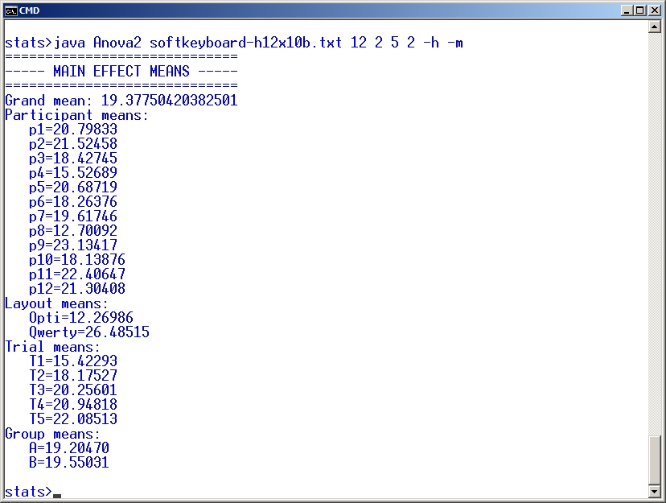
Entry speed in words per minute was much faster with the Qwerty layout (26.5 wpm) than with the Opti layout (12.3 wpm). Let's see if the variances were sufficiently low to deem the difference in the means statistically significant:
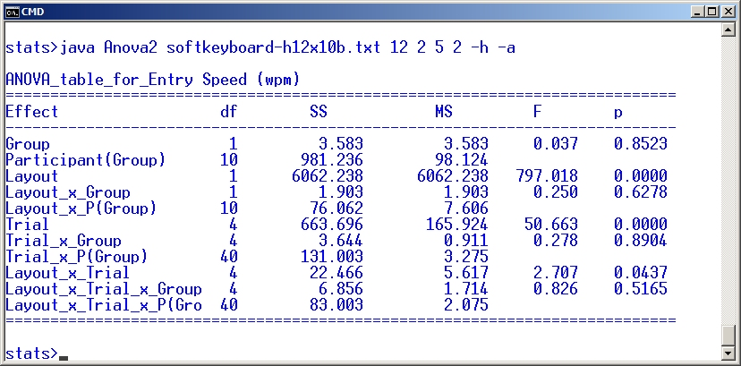
Yes. The F statistic, which is the ratio of the mean squares (6062.238 / 7.606 = 797.0), is extremely high. Not surprisingly, the F statistic for the main effect of Layout on Entry Speed is highly significant (F1,10 = 797.0, p < .0001). In all, the table shows three main effects and four interaction effects. There is considerable leeway in presenting the results in a research paper. See Experiment 1 in "Using paper mockups for evaluating soft keyboard layouts" (MacKenzie & Read, CASCON 2007) for an example of how the results above might be reported.
The results above are confirmed using StatView:
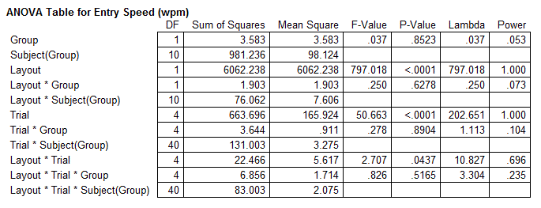
ONE-WAY WITH ONE BETWEEN-SUBJECTS FACTOR
A one-way between-subjects design might be used, for example, to test whether an interface or
interaction technique works better with left-handed vs. right-handed users (or with males vs.
females). In this case, the design must be between-subjects because a participant cannot be both
left-handed and right-handed (or male and female!). Two groups of participants are required.
Let's consider the case where five left-handed users (L) and five right-handed users (R) are
measured on a task. The independent variable is Handedness with two levels, Left and Right, and
the dependent variable is Time (seconds) to complete a task. Here are the example data, stored in
anova-h10b.txt:
DV: Time (s)
F1: .
F2: .
F3: Handedness
25.6,L
23.4,L
19.4,L
28.1,L
25.9,L
14.3,R
22.0,R
30.4,R
21.1,R
19.3,R
The means (not shown) for the Left- and Right-handed groups were 28.48 s and 21.42 s,
respectively. So, the Left-handed group took, on average, 33% longer to complete the task. That's
a huge performance difference, but is the difference in the means statistically significant?
Let's see. The analysis is performed as follows:
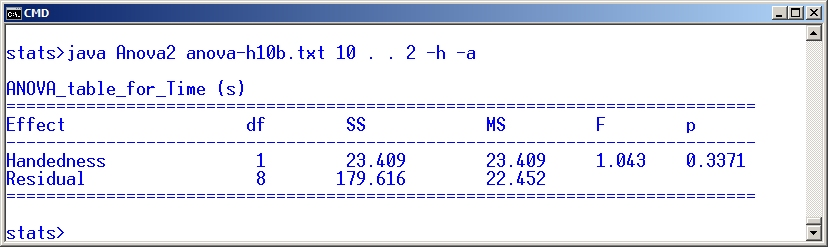
Despite the observation that the Left-handed group took considerable longer to complete the task, the difference between the groups was not statistically significant (F1,8 = 1.04, p > .05). This might be partly attributed to the small number of participants tested. It might also be attributed simply to a lack of bias in the interface for Left-handed vs. Right-handed users.
Using StatView, the above results are confirmed:
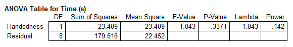
A note on the calculations:
The trickiest part is the calculation of p, representing the significance of F.
This comes by way of the method FProbability in the Statistics class in
the University of Waikato's weka.core package. This package was obtained from
Statistics.class copyright notice:
-----
Class implementing some distributions, tests, etc. The code is mostly adapted from the CERN Jet Java libraries: Copyright 2001 University of Waikato Copyright 1999 CERN - European Organization for Nuclear Research. Permission to use, copy, modify, distribute and sell this software and its documentation for any purpose is hereby granted without fee, provided that the above copyright notice appear in all copies and that both that copyright notice and this permission notice appear in supporting documentation. CERN and the University of Waikato make no representations about the suitability of this software for any purpose. It is provided "as is" without expressed or implied warranty.
-----
| Constructor Summary | |
|---|---|
Anova2()
|
|
| Method Summary | |
|---|---|
static void |
main(java.lang.String[] args)
|
| Methods inherited from class java.lang.Object |
|---|
equals, getClass, hashCode, notify, notifyAll, toString, wait, wait, wait |
| Constructor Detail |
|---|
public Anova2()
| Method Detail |
|---|
public static void main(java.lang.String[] args)
throws java.io.IOException
java.io.IOException
|
|||||||
| PREV CLASS NEXT CLASS | FRAMES NO FRAMES | ||||||
| SUMMARY: NESTED | FIELD | CONSTR | METHOD | DETAIL: FIELD | CONSTR | METHOD | ||||||